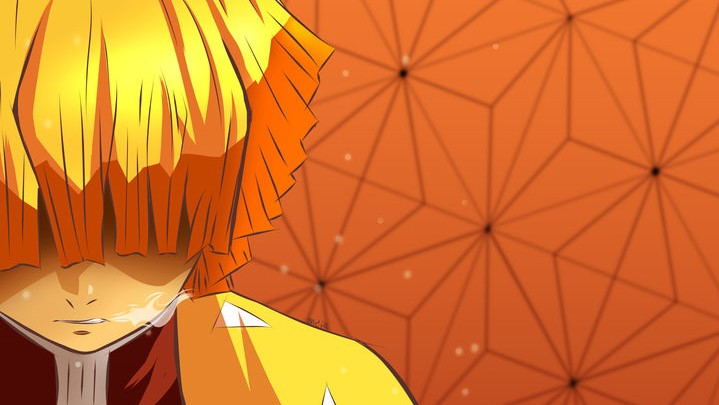
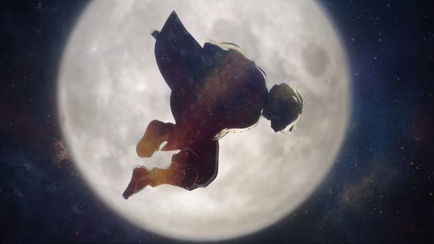
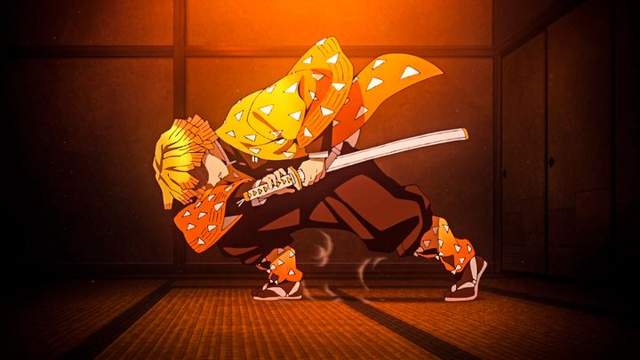

我妻善逸
炭治郎参加鬼杀队最终试验时合格的五名同期生之一（但炭治郎完全没有印象），造型为制服上披着三角形图案的黄色羽织，留着金色顺直中短发的圆眉少年。 为人十分胆小懦弱，时时刻刻都认为自己马上就要死了，为了不要在单身状态下死去，时常纠缠女孩子要对方跟他结婚，亦因为早期只信任自己想相信的对象而屡屡受骗。虽然性格不讨人喜欢但心地善良，会为了朋友和女孩子挺身而出。见到祢豆子后一见钟情。拥有极佳的“听觉”，能够透过呼吸、心跳、发出的声响听见心声以及分辨人与鬼的声音，不仅在能在睡眠状态听见外界的声响，连仅听过一次的乐曲也能完全重现。
据回忆，最初的发色是黑色，某次躲避爷爷的训练时躲在树上却被闪电劈中，从此变成金发。 在过度紧张与恐惧之下会陷入沉睡，却能够变强发挥精湛的剑术雷之呼吸法，但自己不知道这件事情。虽然目前在雷之呼吸法的6种基本型态当中只习得壹之型的"霹雳一闪"，但已有着宛如雷电般快速斩鬼的实力。
重要事件
- 早年，在成为鬼杀队前因被女子欺骗不而得不替她还债， 最后鬼杀队的前任鸣柱桑岛慈悟郎替自己还了债。自己被逼迫成了其徒弟。 之后被前任鸣柱作为「雷之呼吸」的继承人以‘培养’的名义进行地狱式训练，某次为了躲避师父的严格训练而逃到树上，恰巧被一阵落雷连人带树给击中，使原先的黑发变成了现在的金发。
- 最终选拔，本来觉得要死了却撑过训练并参加了入队试炼原本不想参加但被师父打了几个巴掌后才去的，脸上留下了许多巴掌印，之后成功在七天之内存活下来而通过了试炼，后来被分配鎹鸦其实是麻雀（啾太郎）和日轮刀。此后与师兄发生冲突，离开师傅独自斩鬼。在一次哭闹要跟路人女生求婚之时却再次遇到了灶门炭治郎，被炭治郎拦下后要求在他结婚前保护自己。听到炭治郎说放着祢豆子的箱子很重要后死死的保护着不让伊之助触碰，让炭治郎对他有所改观。
- 那田蜘蛛山篇，与炭治郎等人走散，独自一人遇上蜘蛛哥哥，被其暗中下毒后手脚逐渐缩短，但在变成蜘蛛之前以「雷之呼吸·一之型·霹雳一闪·六连」斩首蜘蛛哥哥，随后倒地以呼吸法缓解毒素扩散，后被前来支援的蝴蝶忍所救。
- 柱合会议，因为毒素的原因留在蝴蝶屋修养，为此不得不喝下难闻的汤药。在蝴蝶屋的女孩们的恢复训练辅助中因为过于流氓被女孩们拳打脚踢。在不断溜出去偷吃的时候炭治郎学会了「全集中·常中」，打败了香奈乎，为了变强与炭治郎伊之助一起努力。
- 无限列车篇，与炭治郎等人登上无限列车，调查“火之神神乐”以及无限列车事件。期间受到血鬼术沉睡，被人入侵梦境，后在祢豆子的血鬼术下苏醒然后又睡着。在炎柱炼狱先生的带领下保护了一个车厢的人们。
- 吉原花街潜入（女装）篇，奉音柱·宇髓天元之命，变装成游女"善子"卧底在吉原著名的青楼"京极屋"，被其它同事评论"长的丑却很有音乐天分"，期间因为听见有女孩在哭泣，上前了解状况时发现京极屋的花魁蕨姬正在对底下的秃动粗，在与蕨姬的对话中随即听出"鬼的声音"，仍然鼓起勇气拯救该名遭施暴受伤的秃，被蕨姬（堕姬）打伤后藏匿至地底准备作为食粮，后因伊之助的乱入而获救，并以睡眠状态加入战局。最后和伊之助协力将堕姬斩首。
能力
照片


